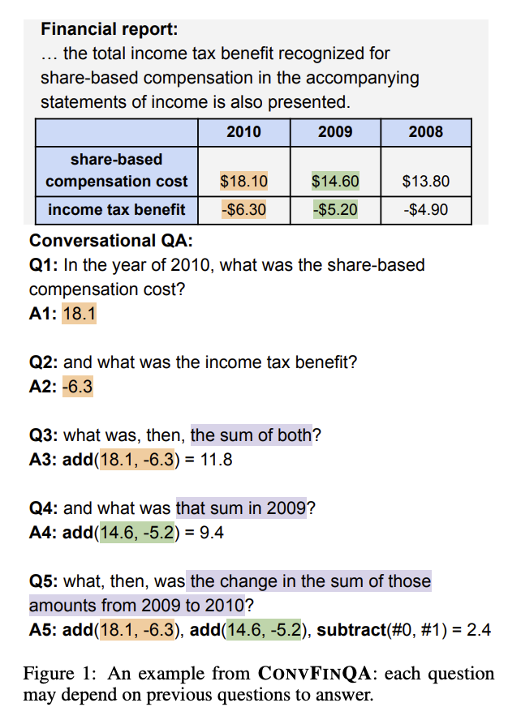
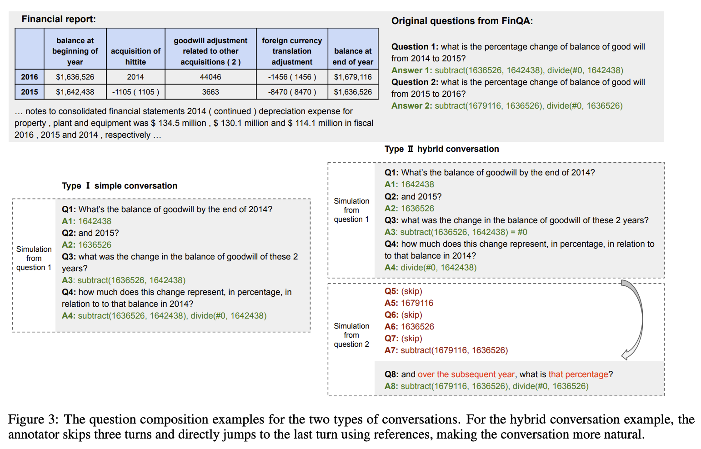
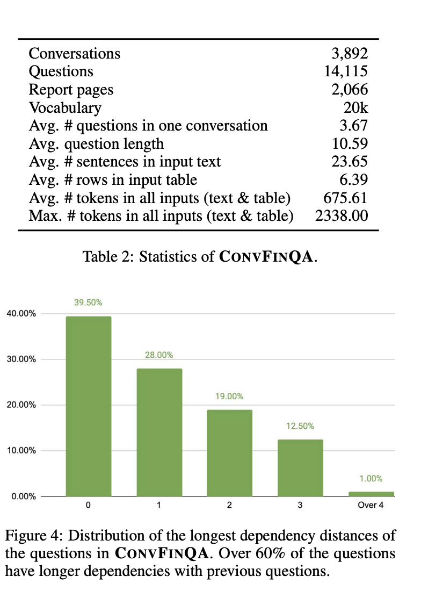
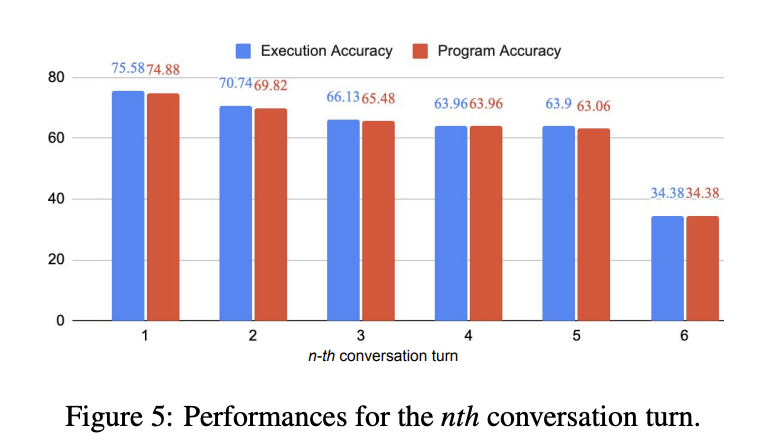

import json
import matplotlib.pyplot as plt
import pandas as pd
import seaborn as snsWhile interviewing for my next role, I received a take-home assignment focused on financial reasoning over conversational data. Given all the hype around DSPy, I decided to use this opportunity to finally learn the tool properly.
Financial reasoning over conversational data presents a unique challenge in NLP: models must not only understand natural language but also perform multi-step numerical computations while maintaining context across dialogue turns.
ConvFinQA tackles this problem by combining conversational QA with financial documents and tables, requiring systems to execute chains of mathematical operations to arrive at correct answers.
What if we could improve model performance by teaching systems to learn from easier examples first, gradually building up to complex multi-turn reasoning? This is the core idea behind curriculum learning.
This post begins a series exploring curriculum learning with DSPy. We start with an exploratory analysis of ConvFinQA to understand what makes some examples harder than others, identify complexity patterns in the data, and establish the foundation for a curriculum-based approach to training more effective reasoning systems.
Introduction
Given the dataset ConvFinQA, we will aim to explore the dataset.
Specifically, for the hiring task, our goals are as follows:
- Explore the dataset to understand the distribution of the data
- Identify evaluation metrics that can be used to evaluate the model
- Design a high-level flow of the implementation
- Identify methods/models to use
data = json.load(open("../data/convfinqa_dataset.json"))data.keys()dict_keys(['train', 'dev'])The current dataset only contains the train and dev splits. For evaluation, we will likely use the dev split, and for training, we’ll split the train split into a train and val split.
data["train"][0]{'id': 'Single_JKHY/2009/page_28.pdf-3',
'doc': {'pre_text': '26 | 2009 annual report in fiscal 2008 , revenues in the credit union systems and services business segment increased 14% ( 14 % ) from fiscal 2007 . all revenue components within the segment experienced growth during fiscal 2008 . license revenue generated the largest dollar growth in revenue as episys ae , our flagship core processing system aimed at larger credit unions , experienced strong sales throughout the year . support and service revenue , which is the largest component of total revenues for the credit union segment , experienced 34 percent growth in eft support and 10 percent growth in in-house support . gross profit in this business segment increased $ 9344 in fiscal 2008 compared to fiscal 2007 , due primarily to the increase in license revenue , which carries the highest margins . liquidity and capital resources we have historically generated positive cash flow from operations and have generally used funds generated from operations and short-term borrowings on our revolving credit facility to meet capital requirements . we expect this trend to continue in the future . the company 2019s cash and cash equivalents increased to $ 118251 at june 30 , 2009 from $ 65565 at june 30 , 2008 . the following table summarizes net cash from operating activities in the statement of cash flows : 2009 2008 2007 .',
'post_text': 'year ended june 30 , cash provided by operations increased $ 25587 to $ 206588 for the fiscal year ended june 30 , 2009 as compared to $ 181001 for the fiscal year ended june 30 , 2008 . this increase is primarily attributable to a decrease in receivables compared to the same period a year ago of $ 21214 . this decrease is largely the result of fiscal 2010 annual software maintenance billings being provided to customers earlier than in the prior year , which allowed more cash to be collected before the end of the fiscal year than in previous years . further , we collected more cash overall related to revenues that will be recognized in subsequent periods in the current year than in fiscal 2008 . cash used in investing activities for the fiscal year ended june 2009 was $ 59227 and includes $ 3027 in contingent consideration paid on prior years 2019 acquisitions . cash used in investing activities for the fiscal year ended june 2008 was $ 102148 and includes payments for acquisitions of $ 48109 , plus $ 1215 in contingent consideration paid on prior years 2019 acquisitions . capital expenditures for fiscal 2009 were $ 31562 compared to $ 31105 for fiscal 2008 . cash used for software development in fiscal 2009 was $ 24684 compared to $ 23736 during the prior year . net cash used in financing activities for the current fiscal year was $ 94675 and includes the repurchase of 3106 shares of our common stock for $ 58405 , the payment of dividends of $ 26903 and $ 13489 net repayment on our revolving credit facilities . cash used in financing activities was partially offset by proceeds of $ 3773 from the exercise of stock options and the sale of common stock ( through the employee stock purchase plan ) and $ 348 excess tax benefits from stock option exercises . during fiscal 2008 , net cash used in financing activities for the fiscal year was $ 101905 and includes the repurchase of 4200 shares of our common stock for $ 100996 , the payment of dividends of $ 24683 and $ 429 net repayment on our revolving credit facilities . cash used in financing activities was partially offset by proceeds of $ 20394 from the exercise of stock options and the sale of common stock and $ 3809 excess tax benefits from stock option exercises . beginning during fiscal 2008 , us financial markets and many of the largest us financial institutions have been shaken by negative developments in the home mortgage industry and the mortgage markets , and particularly the markets for subprime mortgage-backed securities . since that time , these and other such developments have resulted in a broad , global economic downturn . while we , as is the case with most companies , have experienced the effects of this downturn , we have not experienced any significant issues with our current collection efforts , and we believe that any future impact to our liquidity will be minimized by cash generated by recurring sources of revenue and due to our access to available lines of credit. .',
'table': {'Year ended June 30, 2009': {'net income': 103102.0,
'non-cash expenses': 74397.0,
'change in receivables': 21214.0,
'change in deferred revenue': 21943.0,
'change in other assets and liabilities': -14068.0,
'net cash from operating activities': 206588.0},
'2008': {'net income': 104222.0,
'non-cash expenses': 70420.0,
'change in receivables': -2913.0,
'change in deferred revenue': 5100.0,
'change in other assets and liabilities': 4172.0,
'net cash from operating activities': 181001.0},
'2007': {'net income': 104681.0,
'non-cash expenses': 56348.0,
'change in receivables': -28853.0,
'change in deferred revenue': 24576.0,
'change in other assets and liabilities': 17495.0,
'net cash from operating activities': 174247.0}}},
'dialogue': {'conv_questions': ['what is the net cash from operating activities in 2009?',
'what about in 2008?',
'what is the difference?',
'what percentage change does this represent?'],
'conv_answers': ['206588', '181001', '25587', '14.1%'],
'turn_program': ['206588',
'181001',
'subtract(206588, 181001)',
'subtract(206588, 181001), divide(#0, 181001)'],
'executed_answers': [206588.0, 181001.0, 25587.0, 0.14136],
'qa_split': [False, False, False, False]},
'features': {'num_dialogue_turns': 4,
'has_type2_question': False,
'has_duplicate_columns': False,
'has_non_numeric_values': False}}The data matches the schema given in the dataset.md file.
dataset.md
Dataset Card
Table of Contents
Summary
This dataset is a cleaner version of the original dataset from the ConFinQA repo. This dataset consists of conversational numerical reasoning questions over unstructured financial documents, containing datatables.
Useful Extracts from the Paper
CONVFINQA (Conversational Finance Question Answering), with 3,892 conversations consisting of 14,115 questions. To construct the dataset, we design a framework to simulate the conversation flow by decomposition and concatenation of the multihop questions from the FinQA dataset.
In our CONVFINQA dataset, the major challenge is to learn the chain of numerical reasoning throughout the conversation turns.
A sample example:

Types of Question:
- Type I: Simple conversation: we take one muti-hop question and decompose its reasoning program into single steps – each reasoning step will then be realized into one question as one conversation turn.
- Type II: Hybrid conversations: We take two multi-hop questions about the same report and break down their reasoning steps. Then, we add a number selection steps like in type I conversations. By combining the steps from both questions, we build a full conversation that reflects someone asking about two related aspects of the same report. Since these aspects are often connected, the resulting conversation includes longer reasoning chains across turns.

Dataset Statistics
We end up with 3,892 conversations containing 14,115 questions. We split the dataset into 3,037/421/434 for train/dev/test sets. 2,715 of the conversations are simple conversations, and the rest 1,177 are hybrid conversations.
| Split | Conversations | Questions |
|---|---|---|
| Train | 3,037 | — |
| Dev | 421 | — |
| Test | 434 | — |
| Total | 3,892 | 14,115 |

Baselines
Human Baselines
To evaluate the quality of CONVFINQA and establish human performance references, we sample 200 example questions and distribute to both the expert and laymen annotators to answer.
| Annotator | Exe Acc |
|---|---|
| Human Expert Performance | 89.44 |
| General Crowd Performance | 46.90 |
Model Baselines
Statistics
| Model | Method | Exe Acc |
|---|---|---|
| GPT-3 | answer-only-prompt | 24.09 |
| GPT-3 | CoT prompting | 40.63 |
| GPT-3 | DSL program* | 45.15 |
| FinQANet(RoBERTa-large)** | DSL program | 68.90 |
*Referred to as: Program-normal-DSL prompting in the paper
**Proposed in FinQA, it is a pipeline approach with a retriever to first retrieve the supporting facts from the input financial report, then a generator to generate the DSL program to get the answer. Note: all methods in this baseline table had a retrieval step, not just FinQANet. #### Analysis from the Paper (Section 5.3): > The model [FinQANet] excels at number selection questions. For the number selection questions depending on previous references, e.g., what is that value in the subsequent year?, the model is mostly able to answer. Also, the model is mostly clear on when to discard the previous context and make the transition to new questions.
The model [FinQANet] suffers from the lack of domain knowledge. The lack of financial knowledge leads to many errors of missing retrieval facts, wrong value selections, and wrong mathematical generations. Nonetheless, the current large pretrained models do see financial corpus during pretraining; we still need to endow the system with stronger domain knowledge for tasks requiring high-level, complex domain reasoning abilities.
The model [FinQANet] struggles with long reasoning chains. For the later question turns in a conversation that demonstrate longer reasoning dependencies to the previous context, the model often struggles with deducting the correct reasoning programs. If the prediction for any turn is wrong, then there is a very minor chance that the subsequent turns are correct.
Later turns in the conversations [by FinQANet] tend to be harder to answer due to longer reasoning dependencies. [See figure 5.]

Dataset Structure
Data Fields
class ConvFinQARecord(BaseModel):
id: str = Field(description="The id of the record")
doc: Document = Field(description="The document")
dialogue: Dialogue = Field(description="The conversational dialogue")
features: Features = Field(description="The features of the record, created by XXX to help you understand the data")
class Document(BaseModel):
pre_text: str = Field(description="The text before the table in the document")
post_text: str = Field(description="The text after the table in the document")
table: dict[str, dict[str, float | str | int]] = Field(
description="The table of the document as a dictionary "
)
class Dialogue(BaseModel):
conv_questions: list[str] = Field(
description="The questions in the conversation dialogue, originally called 'dialogue_break'"
)
conv_answers: list[str] = Field(
description="The answers to each question turn, derived from 'answer_list' and original FinQA answers"
)
turn_program: list[str] = Field(
description="The DSL turn program for each question turn"
)
executed_answers: list[float | str] = Field(
description="The golden program execution results for each question turn"
)
qa_split: list[bool] = Field(
description="This field indicates the source of each question turn - 0 if from the decomposition of the first FinQA question, 1 if from the second. For the Type I simple conversations, this field is all 0s."
)
class Features(BaseModel):
num_dialogue_turns: int = Field(
description="The number of turns in the dialogue, calculated from the length of conv_questions"
)
has_type2_question: bool = Field(
description="Whether the dialogue has a type 2 question, calculated if qa_split contains a 1 this will return true"
)
has_duplicate_columns: bool = Field(
description="Whether the table has duplicate column names not fully addressed during cleaning. We suffix the duplicate column headers with a number if there was no algorithmic fix. e.g. 'Revenue (1)' or 'Revenue (2) "
)
has_non_numeric_values: bool = Field(
description="Whether the table has non-numeric values"
)Cleaning Process
The original data is in a messy disorganised state with a lot of errors in the original OCR process. We have cleaned it for you for the purpose of this task. Though it is not perfect.
Tables: - Fix duplicate column headers, either by inspecting the original table or by suffixing the duplicate column headers with a number if there was no algorithmic fix. e.g. ‘Revenue (1)’ or ‘Revenue (2)’ - Convert all values to numeric where applicable, e.g. negative values are sometimes written as ‘(12345)’ or ‘-12345 (12345)’ when they should be -12345.0
Dialogue: - Answer list is now the correct length and corresponds to the number of the dialogue questions - Answer list contains the correct answers for each conversational question instead of placeholder values located in multiple places
train_df = pd.DataFrame(data["train"])
test_df = pd.DataFrame(data["dev"])train_df.columnsIndex(['id', 'doc', 'dialogue', 'features'], dtype='object')train_df.info()<class 'pandas.core.frame.DataFrame'>
RangeIndex: 3037 entries, 0 to 3036
Data columns (total 4 columns):
# Column Non-Null Count Dtype
--- ------ -------------- -----
0 id 3037 non-null object
1 doc 3037 non-null object
2 dialogue 3037 non-null object
3 features 3037 non-null object
dtypes: object(4)
memory usage: 95.0+ KBtest_df.columnsIndex(['id', 'doc', 'dialogue', 'features'], dtype='object')test_df.info()<class 'pandas.core.frame.DataFrame'>
RangeIndex: 421 entries, 0 to 420
Data columns (total 4 columns):
# Column Non-Null Count Dtype
--- ------ -------------- -----
0 id 421 non-null object
1 doc 421 non-null object
2 dialogue 421 non-null object
3 features 421 non-null object
dtypes: object(4)
memory usage: 13.3+ KBGiven the schema in dataset.md file, we will explode the columns with nested features to make them easier to work with.
train_flat_df = pd.concat(
[
train_df.drop(["doc", "dialogue", "features"], axis=1),
train_df["doc"].apply(pd.Series).add_prefix("doc_"),
train_df["dialogue"].apply(pd.Series).add_prefix("dialogue_"),
train_df["features"].apply(pd.Series).add_prefix("features_"),
],
axis=1,
)
test_flat_df = pd.concat(
[
test_df.drop(["doc", "dialogue", "features"], axis=1),
test_df["doc"].apply(pd.Series).add_prefix("doc_"),
test_df["dialogue"].apply(pd.Series).add_prefix("dialogue_"),
test_df["features"].apply(pd.Series).add_prefix("features_"),
],
axis=1,
)train_flat_df.info()<class 'pandas.core.frame.DataFrame'>
RangeIndex: 3037 entries, 0 to 3036
Data columns (total 13 columns):
# Column Non-Null Count Dtype
--- ------ -------------- -----
0 id 3037 non-null object
1 doc_pre_text 3037 non-null object
2 doc_post_text 3037 non-null object
3 doc_table 3037 non-null object
4 dialogue_conv_questions 3037 non-null object
5 dialogue_conv_answers 3037 non-null object
6 dialogue_turn_program 3037 non-null object
7 dialogue_executed_answers 3037 non-null object
8 dialogue_qa_split 3037 non-null object
9 features_num_dialogue_turns 3037 non-null int64
10 features_has_type2_question 3037 non-null bool
11 features_has_duplicate_columns 3037 non-null bool
12 features_has_non_numeric_values 3037 non-null bool
dtypes: bool(3), int64(1), object(9)
memory usage: 246.3+ KBtest_flat_df.info()<class 'pandas.core.frame.DataFrame'>
RangeIndex: 421 entries, 0 to 420
Data columns (total 13 columns):
# Column Non-Null Count Dtype
--- ------ -------------- -----
0 id 421 non-null object
1 doc_pre_text 421 non-null object
2 doc_post_text 421 non-null object
3 doc_table 421 non-null object
4 dialogue_conv_questions 421 non-null object
5 dialogue_conv_answers 421 non-null object
6 dialogue_turn_program 421 non-null object
7 dialogue_executed_answers 421 non-null object
8 dialogue_qa_split 421 non-null object
9 features_num_dialogue_turns 421 non-null int64
10 features_has_type2_question 421 non-null bool
11 features_has_duplicate_columns 421 non-null bool
12 features_has_non_numeric_values 421 non-null bool
dtypes: bool(3), int64(1), object(9)
memory usage: 34.2+ KBEDA
Missing Data
First, let’s check to see if there’s any missing data in any field.
import missingno as msno
msno.matrix(train_flat_df)
msno.matrix(test_flat_df)
No missing values in the training dataset.
pre and post text
According to the database schema:
- pre_text -> Supporting text from the document occuring BEFORE the table content
- post_text -> Supporting text from the document occuring AFTER the table content
from pprint import pprint
pprint(train_flat_df["doc_pre_text"].head().iloc[0])('26 | 2009 annual report in fiscal 2008 , revenues in the credit union '
'systems and services business segment increased 14% ( 14 % ) from fiscal '
'2007 . all revenue components within the segment experienced growth during '
'fiscal 2008 . license revenue generated the largest dollar growth in revenue '
'as episys ae , our flagship core processing system aimed at larger credit '
'unions , experienced strong sales throughout the year . support and service '
'revenue , which is the largest component of total revenues for the credit '
'union segment , experienced 34 percent growth in eft support and 10 percent '
'growth in in-house support . gross profit in this business segment increased '
'$ 9344 in fiscal 2008 compared to fiscal 2007 , due primarily to the '
'increase in license revenue , which carries the highest margins . liquidity '
'and capital resources we have historically generated positive cash flow from '
'operations and have generally used funds generated from operations and '
'short-term borrowings on our revolving credit facility to meet capital '
'requirements . we expect this trend to continue in the future . the company '
'2019s cash and cash equivalents increased to $ 118251 at june 30 , 2009 from '
'$ 65565 at june 30 , 2008 . the following table summarizes net cash from '
'operating activities in the statement of cash flows : 2009 2008 2007 .')train_flat_df["doc_pre_text"].apply(len).describe()count 3037.000000
mean 1760.501811
std 1397.695620
min 1.000000
25% 568.000000
50% 1417.000000
75% 2765.000000
max 7153.000000
Name: doc_pre_text, dtype: float64pprint(test_flat_df["doc_pre_text"].head().iloc[0])('stock-based awards under the plan stock options 2013 marathon grants stock '
'options under the 2007 plan and previously granted options under the 2003 '
'plan . marathon 2019s stock options represent the right to purchase shares '
'of common stock at the fair market value of the common stock on the date of '
'grant . through 2004 , certain stock options were granted under the 2003 '
'plan with a tandem stock appreciation right , which allows the recipient to '
'instead elect to receive cash and/or common stock equal to the excess of the '
'fair market value of shares of common stock , as determined in accordance '
'with the 2003 plan , over the option price of the shares . in general , '
'stock options granted under the 2007 plan and the 2003 plan vest ratably '
'over a three-year period and have a maximum term of ten years from the date '
'they are granted . stock appreciation rights 2013 prior to 2005 , marathon '
'granted sars under the 2003 plan . no stock appreciation rights have been '
'granted under the 2007 plan . similar to stock options , stock appreciation '
'rights represent the right to receive a payment equal to the excess of the '
'fair market value of shares of common stock on the date the right is '
'exercised over the grant price . under the 2003 plan , certain sars were '
'granted as stock-settled sars and others were granted in tandem with stock '
'options . in general , sars granted under the 2003 plan vest ratably over a '
'three-year period and have a maximum term of ten years from the date they '
'are granted . stock-based performance awards 2013 prior to 2005 , marathon '
'granted stock-based performance awards under the 2003 plan . no stock-based '
'performance awards have been granted under the 2007 plan . beginning in 2005 '
', marathon discontinued granting stock-based performance awards and instead '
'now grants cash-settled performance units to officers . all stock-based '
'performance awards granted under the 2003 plan have either vested or been '
'forfeited . as a result , there are no outstanding stock-based performance '
'awards . restricted stock 2013 marathon grants restricted stock and '
'restricted stock units under the 2007 plan and previously granted such '
'awards under the 2003 plan . in 2005 , the compensation committee began '
'granting time-based restricted stock to certain u.s.-based officers of '
'marathon and its consolidated subsidiaries as part of their annual long-term '
'incentive package . the restricted stock awards to officers vest three years '
'from the date of grant , contingent on the recipient 2019s continued '
'employment . marathon also grants restricted stock to certain non-officer '
'employees and restricted stock units to certain international employees ( '
'201crestricted stock awards 201d ) , based on their performance within '
'certain guidelines and for retention purposes . the restricted stock awards '
'to non-officers generally vest in one-third increments over a three-year '
'period , contingent on the recipient 2019s continued employment . prior to '
'vesting , all restricted stock recipients have the right to vote such stock '
'and receive dividends thereon . the non-vested shares are not transferable '
'and are held by marathon 2019s transfer agent . common stock units 2013 '
'marathon maintains an equity compensation program for its non-employee '
'directors under the 2007 plan and previously maintained such a program under '
'the 2003 plan . all non-employee directors other than the chairman receive '
'annual grants of common stock units , and they are required to hold those '
'units until they leave the board of directors . when dividends are paid on '
'marathon common stock , directors receive dividend equivalents in the form '
'of additional common stock units . stock-based compensation expense 2013 '
'total employee stock-based compensation expense was $ 80 million , $ 83 '
'million and $ 111 million in 2007 , 2006 and 2005 . the total related income '
'tax benefits were $ 29 million , $ 31 million and $ 39 million . in 2007 and '
'2006 , cash received upon exercise of stock option awards was $ 27 million '
'and $ 50 million . tax benefits realized for deductions during 2007 and 2006 '
'that were in excess of the stock-based compensation expense recorded for '
'options exercised and other stock-based awards vested during the period '
'totaled $ 30 million and $ 36 million . cash settlements of stock option '
'awards totaled $ 1 million and $ 3 million in 2007 and 2006 . stock option '
'awards granted 2013 during 2007 , 2006 and 2005 , marathon granted stock '
'option awards to both officer and non-officer employees . the weighted '
'average grant date fair value of these awards was based on the following '
'black-scholes assumptions: .')test_flat_df["doc_pre_text"].apply(len).describe()count 421.000000
mean 1538.061758
std 1337.167597
min 17.000000
25% 410.000000
50% 1072.000000
75% 2347.000000
max 5639.000000
Name: doc_pre_text, dtype: float64Looks like the pre_text in the data has some si
fig, axes = plt.subplots(1, 2, figsize=(14, 5))
sns.histplot(
train_flat_df["doc_pre_text"].map(lambda x: len(str(x))),
bins=30,
color="blue",
alpha=0.7,
ax=axes[0],
)
axes[0].set_xlabel("Length of doc_pre_text")
axes[0].set_ylabel("Frequency")
axes[0].set_title("train_flat_df: doc_pre_text length")
sns.histplot(
test_flat_df["doc_pre_text"].map(lambda x: len(str(x))),
bins=30,
color="orange",
alpha=0.7,
ax=axes[1],
)
axes[1].set_xlabel("Length of doc_pre_text")
axes[1].set_ylabel("Frequency")
axes[1].set_title("test_flat_df: doc_pre_text length")
plt.tight_layout()
plt.show()
fig, axes = plt.subplots(1, 2, figsize=(14, 5))
sns.histplot(
train_flat_df["doc_post_text"].map(lambda x: len(str(x))),
bins=30,
color="green",
alpha=0.7,
ax=axes[0],
)
axes[0].set_xlabel("Length of doc_post_text")
axes[0].set_ylabel("Frequency")
axes[0].set_title("train_flat_df: doc_post_text length")
sns.histplot(
test_flat_df["doc_post_text"].map(lambda x: len(str(x))),
bins=30,
color="red",
alpha=0.7,
ax=axes[1],
)
axes[1].set_xlabel("Length of doc_post_text")
axes[1].set_ylabel("Frequency")
axes[1].set_title("test_flat_df: doc_post_text length")
plt.tight_layout()
plt.show()

Looks like the train and test data have a similar distribution for doc_pre_text and doc_post_text.
However, we do see some extreme outliers, with the large documents have > 5000 characters.
Most new generation LLMs do have a ctx window large enough to handle both pre text + table + post text in the same context window, and we may not need any pre-processing for fields. However, we will revisit this later.
doc_table
Table Dimensions
def compute_dims(table):
"""
Compute basic shape statistics for a table dict.
Args:
table (dict): Mapping from row keys to dicts of column:value pairs.
Returns:
pd.Series: Series with n_rows, n_cols, total_cells.
- n_rows: Number of rows in the table (outer dict keys)
- n_cols: Number of unique columns across all rows
- total_cells: Total number of (row, col) value pairs
"""
n_rows = len(table)
cols = {col for row in table.values() for col in row}
n_cols = len(cols)
total_cells = sum(len(row) for row in table.values())
return pd.Series({"n_rows": n_rows, "n_cols": n_cols, "total_cells": total_cells})
for df in (train_flat_df, test_flat_df):
df[["n_rows", "n_cols", "total_cells"]] = df["doc_table"].apply(compute_dims)
all_dims = pd.concat(
[
train_flat_df[["n_rows", "n_cols", "total_cells"]].assign(split="train"),
test_flat_df[["n_rows", "n_cols", "total_cells"]].assign(split="test"),
],
ignore_index=True,
)
fig, axes = plt.subplots(3, 1, figsize=(10, 8))
for ax, col in zip(axes, ["n_rows", "n_cols", "total_cells"]):
sns.histplot(data=all_dims, x=col, hue="split", multiple="stack", bins=30, ax=ax)
ax.set_title(col)
plt.tight_layout()
plt.show()
Some key points:
- Most tables don’t have more than 6 rows. This is good, since it limits the amount of error that can be introduced by the model when answering a question.
- Column distribution is a bit more extreme, especially in the training dataset.
- While the training dataset has a maximum of 17 columns, most of the
testdataset tops out at ~8-9 columns. - This is a good feature we could use to determine which records to use for the evaluation. More on this soon!
- While the training dataset has a maximum of 17 columns, most of the
- Same as the number of columns, we see that the training dataset has a much wider distribution of number of cells. In the test set, the majority of records have cells < 30.
threshold = 10
print(f"Tables with more than {threshold} columns per split:")
for split, df in [("train", train_flat_df), ("test", test_flat_df)]:
subset = df[df["n_cols"] > threshold]
print(f" {split}: {len(subset)}")
if not subset.empty:
print(subset[["id", "n_rows", "n_cols"]].head(), "\n")Tables with more than 10 columns per split:
train: 100
id n_rows n_cols
16 Double_PNC/2014/page_99.pdf 2 14
37 Single_GS/2013/page_47.pdf-2 3 12
90 Single_CDW/2015/page_34.pdf-2 5 12
133 Single_CE/2014/page_90.pdf-1 1 11
137 Single_C/2009/page_195.pdf-2 3 14
test: 8
id n_rows n_cols
50 Single_JPM/2007/page_33.pdf-2 3 11
51 Single_GS/2017/page_143.pdf-2 2 13
109 Single_JPM/2007/page_33.pdf-1 3 11
117 Single_GS/2017/page_143.pdf-1 2 13
298 Single_MA/2008/page_126.pdf-1 1 14
def count_nested_tables(table):
"""
Recursively count nested tables in a table dict.
A nested table is any dict or list of dicts within cell values (deeper than the row level).
"""
def _count(t, depth):
cnt = 0
if isinstance(t, dict):
for v in t.values():
if isinstance(v, dict):
if depth > 0:
cnt += 1
cnt += _count(v, depth + 1)
elif isinstance(v, list):
for item in v:
if isinstance(item, dict):
if depth > 0:
cnt += 1
cnt += _count(item, depth + 1)
return cnt
return _count(table, 0)
for df in (train_flat_df, test_flat_df):
df["nested_tables"] = df["doc_table"].apply(count_nested_tables)
print("Nested tables per split:")
for split, df in [("train", train_flat_df), ("test", test_flat_df)]:
nt = df["nested_tables"]
print(
f" {split}: docs w/ nested tables = {(nt > 0).sum()} / {len(nt)}, max nested = {nt.max()}"
)
nested_df = pd.concat(
[
train_flat_df[["nested_tables"]].assign(split="train"),
test_flat_df[["nested_tables"]].assign(split="test"),
],
ignore_index=True,
)
nested_df.info()Nested tables per split:
train: docs w/ nested tables = 0 / 3037, max nested = 0
test: docs w/ nested tables = 0 / 421, max nested = 0
<class 'pandas.core.frame.DataFrame'>
RangeIndex: 3458 entries, 0 to 3457
Data columns (total 2 columns):
# Column Non-Null Count Dtype
--- ------ -------------- -----
0 nested_tables 3458 non-null int64
1 split 3458 non-null object
dtypes: int64(1), object(1)
memory usage: 54.2+ KBnested_df[nested_df["nested_tables"] >= 2]| nested_tables | split |
|---|
Looks like the table are not deeply nested! This is good since we don’t have to worry too much about table formatting, when sending the table as context to the LLM.
train_flat_df.columnsIndex(['id', 'doc_pre_text', 'doc_post_text', 'doc_table',
'dialogue_conv_questions', 'dialogue_conv_answers',
'dialogue_turn_program', 'dialogue_executed_answers',
'dialogue_qa_split', 'features_num_dialogue_turns',
'features_has_type2_question', 'features_has_duplicate_columns',
'features_has_non_numeric_values', 'n_rows', 'n_cols', 'total_cells',
'nested_tables'],
dtype='object')Column Header Analysis
from collections import Counter
def analyze_split(df, split_name):
n_docs = len(df)
dup_count = df["features_has_duplicate_columns"].sum()
years_per_doc = df["doc_table"].apply(len)
year_stats = years_per_doc.describe().to_dict()
freq = Counter()
doc_freq = Counter()
all_headers = set()
for tbl in df["doc_table"]:
hdrs_in_doc = set()
for year_dict in tbl.values():
freq.update(year_dict.keys())
hdrs_in_doc.update(year_dict.keys())
doc_freq.update(hdrs_in_doc)
all_headers.update(hdrs_in_doc)
print(f"\n--- {split_name.upper()} SPLIT ---")
print(f"Total docs: {n_docs}")
print(f"Docs w/ duplicate cols: {dup_count} ({dup_count / n_docs:.1%})")
print(f"Years/doc stats: {year_stats}")
print(f"Unique headers across all docs: {len(all_headers)}")
print("Top 10 headers by total occurrences:", freq.most_common(10))
print("Top 10 headers by docs appeared in:", doc_freq.most_common(10))
for name, df in [("train", train_flat_df), ("test", test_flat_df)]:
analyze_split(df, name)
--- TRAIN SPLIT ---
Total docs: 3037
Docs w/ duplicate cols: 60 (2.0%)
Years/doc stats: {'count': 3037.0, 'mean': 2.839973658215344, 'std': 1.5134690841267935, 'min': 1.0, '25%': 2.0, '50%': 3.0, '75%': 3.0, 'max': 10.0}
Unique headers across all docs: 3948
Top 10 headers by total occurrences: [('total', 1147), ('s&p 500 index', 456), ('s&p 500', 419), ('other', 371), ('operating profit', 253), ('net sales', 229), ('2009', 210), ('2012', 206), ('2010', 206), ('2011', 201)]
Top 10 headers by docs appeared in: [('total', 383), ('other', 205), ('thereafter', 109), ('2012', 107), ('2011', 103), ('2013', 102), ('2010', 99), ('2009', 98), ('2014', 91), ('2018', 87)]
--- TEST SPLIT ---
Total docs: 421
Docs w/ duplicate cols: 17 (4.0%)
Years/doc stats: {'count': 421.0, 'mean': 3.0332541567695963, 'std': 1.6500609236986385, 'min': 1.0, '25%': 2.0, '50%': 3.0, '75%': 4.0, 'max': 8.0}
Unique headers across all docs: 833
Top 10 headers by total occurrences: [('total', 183), ('s&p 500 index', 120), ('cadence design systems inc .', 72), ('nasdaq composite', 72), ('other', 60), ('s&p 500', 42), ('2011', 40), ('operating income', 39), ('2012', 38), ('s&p retail index', 36)]
Top 10 headers by docs appeared in: [('total', 54), ('other', 36), ('s&p 500 index', 20), ('2014', 18), ('2015', 18), ('2012', 17), ('2010', 16), ('2011', 16), ('2007', 16), ('2017', 14)]Row Header Analysis
from collections import Counter
import re
def normalize_row_key(k: str) -> str:
"""Lower-case, drop punctuation, collapse spaces."""
if not k:
return ""
k = k.lower()
k = re.sub(r"[_\-]", " ", k)
k = re.sub(r"[()%:$,]", " ", k)
return re.sub(r"\s+", " ", k).strip()
def analyze_row_headers(df, split_name: str, top_n: int = 10):
raw_freq, norm_freq, summary_freq = Counter(), Counter(), Counter()
summary_kw = (
"total",
"net",
"%",
"percent",
"change",
"difference",
"subtotal",
"summary",
)
for tbl in df["doc_table"]:
if not isinstance(tbl, dict):
continue
for year_dict in tbl.values():
if not isinstance(year_dict, dict):
continue
for raw in year_dict.keys():
if raw is None:
continue
raw = str(raw).strip()
norm = normalize_row_key(raw)
raw_freq[raw] += 1
norm_freq[norm] += 1
if any(k in raw.lower() for k in summary_kw):
summary_freq[raw] += 1
total_rows = sum(raw_freq.values())
print(f"\n===== {split_name.upper()} SPLIT : ROW HEADER ANALYSIS =====")
print(f"Row instances : {total_rows}")
print(f"Unique raw headers : {len(raw_freq):,}")
print(f"Unique normalized headers : {len(norm_freq):,}")
print("\nRaw header ➜ Normalized header (top 10 by freq)")
for hdr, _ in raw_freq.most_common(10):
print(f"{hdr[:55]:55} ➜ {normalize_row_key(hdr)}")
print(f"\nTop-{top_n} most frequent financial metrics (normalized)")
for hdr, cnt in norm_freq.most_common(top_n):
print(f"{hdr[:55]:55} {cnt:>6}")
tot_summary = sum(summary_freq.values())
print(f"\nSubtotal/Summary rows detected (keywords {summary_kw})")
print(f"Instances: {tot_summary} ({tot_summary / total_rows:.1%} of all rows)")
for hdr, cnt in summary_freq.most_common(10):
print(f"{hdr[:55]:55} {cnt:>6}")
for name, df in (("train", train_flat_df), ("test", test_flat_df)):
analyze_row_headers(df, name)
===== TRAIN SPLIT : ROW HEADER ANALYSIS =====
Row instances : 42813
Unique raw headers : 3,948
Unique normalized headers : 3,921
Raw header ➜ Normalized header (top 10 by freq)
total ➜ total
s&p 500 index ➜ s&p 500 index
s&p 500 ➜ s&p 500
other ➜ other
operating profit ➜ operating profit
net sales ➜ net sales
2009 ➜ 2009
2012 ➜ 2012
2010 ➜ 2010
2011 ➜ 2011
Top-10 most frequent financial metrics (normalized)
total 1147
s&p 500 index 456
s&p 500 419
other 371
operating profit 253
net sales 229
2009 210
2010 208
2012 206
2011 201
Subtotal/Summary rows detected (keywords ('total', 'net', '%', 'percent', 'change', 'difference', 'subtotal', 'summary'))
Instances: 7535 (17.6% of all rows)
total 1147
net sales 229
net income 118
net cash provided by operating activities 117
total net revenues 78
total operating expenses 75
total contractual obligations 67
total debt 61
net earnings ( loss ) 58
total minimum lease payments 57
===== TEST SPLIT : ROW HEADER ANALYSIS =====
Row instances : 6159
Unique raw headers : 833
Unique normalized headers : 832
Raw header ➜ Normalized header (top 10 by freq)
total ➜ total
s&p 500 index ➜ s&p 500 index
cadence design systems inc . ➜ cadence design systems inc .
nasdaq composite ➜ nasdaq composite
other ➜ other
s&p 500 ➜ s&p 500
2011 ➜ 2011
operating income ➜ operating income
2012 ➜ 2012
s&p retail index ➜ s&p retail index
Top-10 most frequent financial metrics (normalized)
total 183
s&p 500 index 120
cadence design systems inc . 72
nasdaq composite 72
other 60
s&p 500 42
2011 40
operating income 39
2012 38
s&p retail index 36
Subtotal/Summary rows detected (keywords ('total', 'net', '%', 'percent', 'change', 'difference', 'subtotal', 'summary'))
Instances: 1218 (19.8% of all rows)
total 183
net cash provided by operating activities 28
1.375% ( 1.375 % ) notes due 2015 24
6.25% ( 6.25 % ) notes due 2017 24
5.00% ( 5.00 % ) notes due 2019 24
4.25% ( 4.25 % ) notes due 2021 24
3.375% ( 3.375 % ) notes due 2022 24
total long-term borrowings 24
total contractual obligations 24
net income 21We see some similar patterns in the row headers across the splits, but nothing of significance.
from collections import Counter
import re
def _yield_cells(x):
if isinstance(x, dict):
for v in x.values():
yield from _yield_cells(v)
elif isinstance(x, (list, tuple)):
for v in x:
yield from _yield_cells(v)
else:
yield x
def _parse_num(tok):
s = str(tok).strip()
if not s or s.lower() in ("na", "n/a", "nan", "-"):
return None
neg = (s.startswith("(") and s.endswith(")")) or s.endswith("-")
s = s.strip("()").rstrip("-")
s = re.sub(r"[,\$%]", "", s)
mult = 1
if s.lower().endswith("m"):
mult, s = 1e6, s[:-1]
elif s.lower().endswith("k"):
mult, s = 1e3, s[:-1]
try:
val = float(s) * mult
return -val if neg else val
except:
return None
def analyze_cell_values(df, split_name, top_n=10):
total = num = missing = unp = 0
unpatt = Counter()
for tbl in df["doc_table"]:
if not isinstance(tbl, dict):
continue
for cell in _yield_cells(tbl):
total += 1
txt = str(cell).strip()
if cell is None or txt == "":
missing += 1
elif _parse_num(cell) is None:
unp += 1
key = txt.lower()[:25]
unpatt[key] += 1
else:
num += 1
print(f"\n=== {split_name.upper()} CELL QUALITY ===")
print(f"total: {total}, numeric: {num}, missing: {missing}, unparseable: {unp}")
print(f"Top {top_n} unparseable patterns:")
for pat, cnt in unpatt.most_common(top_n):
print(f" {pat:25} {cnt}")
for name, d in (("train", train_flat_df), ("test", test_flat_df)):
analyze_cell_values(d, name)
=== TRAIN CELL QUALITY ===
total: 42813, numeric: 41499, missing: 184, unparseable: 1130
Top 10 unparseable patterns:
- 265
n/a 147
( in thousands ) 102
nm 62
owned 43
$ - 42
pay 22
fta 20
cash 16
leased 14
=== TEST CELL QUALITY ===
total: 6159, numeric: 6045, missing: 12, unparseable: 102
Top 10 unparseable patterns:
- 13
none 9
high 6
low 6
( b ) 6
leased 6
united states 4
united kingdom 4
( d ) 3
nm 3We see that:
- Train (42,813 total cells): 97.0% numeric, 0.4% missing, 2.6% unparseable
- Test (6,159 total cells): 98.2% numeric, 0.2% missing, 1.7% unparseable
Top unparseable patterns include -, n/a, ( in thousands ), nm, none, high, low, etc., indicating placeholders, qualifiers, and unit headers that need cleaning or custom parsing.
When selecting records for evaluation, we should:
- Exclude or preprocess records with unparseable cells (~1,232 cells total).
- Drop tables where >5% of cells are unparseable to ensure numeric consistency.
This keeps our evaluation set focused on clean, numeric data and avoids noise from poorly parsed entries. More on this later!
train_flat_df.columnsIndex(['id', 'doc_pre_text', 'doc_post_text', 'doc_table',
'dialogue_conv_questions', 'dialogue_conv_answers',
'dialogue_turn_program', 'dialogue_executed_answers',
'dialogue_qa_split', 'features_num_dialogue_turns',
'features_has_type2_question', 'features_has_duplicate_columns',
'features_has_non_numeric_values', 'n_rows', 'n_cols', 'total_cells',
'nested_tables'],
dtype='object')dialogue_conv_questions
train_q_lens = train_flat_df["dialogue_conv_questions"].explode().dropna().map(len)
test_q_lens = test_flat_df["dialogue_conv_questions"].explode().dropna().map(len)
df_q = pd.concat(
[
pd.DataFrame({"length": train_q_lens, "split": "train"}),
pd.DataFrame({"length": test_q_lens, "split": "test"}),
]
)
sns.set_theme(style="whitegrid")
plt.figure(figsize=(8, 5))
sns.histplot(
data=df_q, x="length", hue="split", stat="density", element="step", fill=False
)
plt.title("Distribution of Dialogue Question Lengths by Split")
plt.xlabel("Question Length (characters)")
plt.ylabel("Density")
plt.tight_layout()
Majority of the questions in both the train and test set are short. This is ideal.
dialogue_conv_answers
train_q_lens = train_flat_df["dialogue_conv_answers"].explode().dropna().map(len)
test_q_lens = test_flat_df["dialogue_conv_answers"].explode().dropna().map(len)
df_q = pd.concat(
[
pd.DataFrame({"length": train_q_lens, "split": "train"}),
pd.DataFrame({"length": test_q_lens, "split": "test"}),
]
)
sns.set_theme(style="whitegrid")
plt.figure(figsize=(8, 5))
sns.histplot(
data=df_q, x="length", hue="split", stat="density", element="step", fill=False
)
plt.title("Distribution of Dialogue Answer Lengths by Split")
plt.xlabel("Answer Length (characters)")
plt.ylabel("Density")
plt.tight_layout()
As mentioned in the dataset, most of the answers are either numeric or boolean in nature. We see a majority of the answers having length <= 8, meaning that these are either large numbers, or numbers with large precision.
dialogue_turn_program
This field represents the program DSL generated for the current turn.
train_flat_df["dialogue_turn_program"].head()0 [206588, 181001, subtract(206588, 181001), sub...
1 [9362.2, 9244.9, subtract(9362.2, 9244.9), sub...
2 [5363, 7983, subtract(5363, 7983), subtract(53...
3 [subtract(75.95, const_100), subtract(75.95, c...
4 [subtract(91.06, const_100), subtract(91.06, c...
Name: dialogue_turn_program, dtype: objectdef _get_op_counts(df: pd.DataFrame) -> pd.Series:
"""Return a Series with the number of '(' in every element of dialogue_turn_program."""
return (
df["dialogue_turn_program"]
.explode() # one element per row
.dropna()
.apply(lambda rec: str(rec).count("("))
)
counts_train = _get_op_counts(train_flat_df)
counts_test = _get_op_counts(test_flat_df)
df_counts = pd.concat(
[
pd.DataFrame({"ops": counts_train, "split": "train"}),
pd.DataFrame({"ops": counts_test, "split": "test"}),
]
)
plt.figure(figsize=(8, 4))
sns.histplot(
data=df_counts,
x="ops",
hue="split",
bins=range(0, df_counts["ops"].max() + 2),
element="step",
fill=False,
)
plt.xlabel("Number of operations per element")
plt.ylabel("Frequency")
plt.title("Histogram of operation counts in turn_programs (train vs. test)")
plt.tight_layout()
plt.show()
Similar distributions for number of operations in both the train and test set. Majority of the operations are < 4 .
We could argue that the number of operations is a good proxy for the complexity of the program. As such, we should probably aim to do well first on the examples where the number of operations is small.
train_flat_df.columnsIndex(['id', 'doc_pre_text', 'doc_post_text', 'doc_table',
'dialogue_conv_questions', 'dialogue_conv_answers',
'dialogue_turn_program', 'dialogue_executed_answers',
'dialogue_qa_split', 'features_num_dialogue_turns',
'features_has_type2_question', 'features_has_duplicate_columns',
'features_has_non_numeric_values', 'n_rows', 'n_cols', 'total_cells',
'nested_tables'],
dtype='object')features_num_dialogue_turns
fig, axes = plt.subplots(1, 2, figsize=(14, 5), sharey=True)
order = sorted(
set(train_flat_df["features_num_dialogue_turns"]).union(
test_flat_df["features_num_dialogue_turns"]
)
)
sns.countplot(
y="features_num_dialogue_turns",
data=train_flat_df,
order=order,
ax=axes[0],
color="blue",
alpha=0.7,
)
axes[0].set(
title="Train: Num Dialogue Turns", xlabel="Count", ylabel="Num Dialogue Turns"
)
sns.countplot(
y="features_num_dialogue_turns",
data=test_flat_df,
order=order,
ax=axes[1],
color="orange",
alpha=0.7,
)
axes[1].set(title="Test: Num Dialogue Turns", xlabel="Count", ylabel="")
plt.tight_layout()
plt.show()
Similar distributions across the train and test sets. As mentioned in the paper, we should expect conversations with more dialogue turns, to be more difficult to answer for models.
This is yet another feature we could use when deciding how to split our data into train, validation, and test sets.
train_flat_df.columnsIndex(['id', 'doc_pre_text', 'doc_post_text', 'doc_table',
'dialogue_conv_questions', 'dialogue_conv_answers',
'dialogue_turn_program', 'dialogue_executed_answers',
'dialogue_qa_split', 'features_num_dialogue_turns',
'features_has_type2_question', 'features_has_duplicate_columns',
'features_has_non_numeric_values', 'n_rows', 'n_cols', 'total_cells',
'nested_tables'],
dtype='object')features_has_type2_question
import seaborn as sns
for name, df in [("Train", train_flat_df), ("Test", test_flat_df)]:
vc = df["features_has_type2_question"].value_counts()
print(f"{name} set – Has Type 2 Question counts:\n{vc}\n")
fig, axes = plt.subplots(1, 2, figsize=(10, 4), sharey=True)
sns.countplot(
y="features_has_type2_question",
data=train_flat_df,
ax=axes[0],
palette="Blues",
alpha=0.7,
)
axes[0].set(
title="Train: Has Type 2 Question", xlabel="Count", ylabel="Has Type 2 Question"
)
sns.countplot(
y="features_has_type2_question",
data=test_flat_df,
ax=axes[1],
palette="Oranges",
alpha=0.7,
)
axes[1].set(title="Test: Has Type 2 Question", xlabel="Count", ylabel="")
plt.tight_layout()
plt.show()Train set – Has Type 2 Question counts:
features_has_type2_question
False 2148
True 889
Name: count, dtype: int64
Test set – Has Type 2 Question counts:
features_has_type2_question
False 300
True 121
Name: count, dtype: int64
/var/folders/zf/l4rjbhhj6xq9bfzs9cr7m5vr0000gn/T/ipykernel_98862/668524099.py:9: FutureWarning:
Passing `palette` without assigning `hue` is deprecated and will be removed in v0.14.0. Assign the `y` variable to `hue` and set `legend=False` for the same effect.
sns.countplot(
/var/folders/zf/l4rjbhhj6xq9bfzs9cr7m5vr0000gn/T/ipykernel_98862/668524099.py:20: FutureWarning:
Passing `palette` without assigning `hue` is deprecated and will be removed in v0.14.0. Assign the `y` variable to `hue` and set `legend=False` for the same effect.
sns.countplot(
Similar distrbutions for Type2 questions across the train and test sets, as expected.
Methodology
Given the above dataset analysis, a few things are clear:
- Given the recent explosion of ctx window size for language models, we should be able to build strong baselines model without any finetuning.
- The length analysis of the different fields(pre/post text, table, questions, etc.) confirms that we will likely not need any form of retrieval to answer the questions, contradictory to the original paper.
- There are varying levels of difficulty in the given set of questions and answer.
- We ideally should leverage this to build our models in stages, such that we can track and measure accuracy and perform error analysis at each stage.
The current generation of language models have 3 main phases of training:
- pre-training: large-scale self-supervised next-token prediction on massive web corpora (e.g., C4, Common Crawl) to learn general language patterns.
- mid-training: intermediate training on medium-sized, higher-quality or domain-specific data (10–300 B tokens) with curriculum learning, long-context adaptation, and synthetic/instructional examples to sharpen capabilities.
- post-training: fine-tuning or instruction-tuning on smaller, curated datasets (100 M–1 B tokens) and often RLHF to align the model to downstream tasks and human preferences.
As seen with our dataset, even current language models are trained in stages, with problems that are seemingly difficult for models to understand explicitly trained in either the mid or post-training phase.
This methodology has roots in an reinforcement learning technique called Curriculum Learning.
Curriculum Learning
Core Idea: Curriculum learning for LLMs involves carefully selecting and ordering training data based on difficulty, starting with simpler examples and gradually introducing more complex ones.
Why it’s beneficial:
- Improved Efficiency:
- By starting with easier examples, LLMs can learn fundamental concepts more effectively and then build upon that knowledge.
- Better Generalization:
- A well-designed curriculum can help LLMs generalize better to unseen data by exposing them to a wider range of complexities and nuances.
- Reduced Training Time:
- In some cases, curriculum learning can lead to faster convergence and reduced training time.

Source: Curriculum Learning: A Survey, Soviany et al.
For our dataset, given our analysis, we have the following levers to consider:
- Number of Turns buckets. Eg: 1–2, 3–4, 5–6, ≥7
- Number of max ops bucket: Eg: 0–1, 2–3, 4+
- Type1 vs Type2 questions
- Context length bucket (pre_text/post_text len): ≤P50, P50–P80, >P80
- Noise flags: duplicate columns / non-numeric values
Given that we have limited time for the assignment, we will pick the following
- Easy
- This is the Core stage
- We hope the model will learn how to answer questions that directly pick answers from context, perform simple operations, and can carry previous answers minimally.
- We will use the following filters(all must hold TRUE):
- max_ops_per_conversation ≤ 2
- 2 ≤ num_dialogue_turns ≤ 4
- has_type2_question == False
- doc_pre_text_len ≤ P50_pre
- doc_post_text_len ≤ P50_post
- total_cells ≤ P50_cells
- Medium
- This stage focuses on improving the reasoning ability of the model, and it’s ability to track dependencies.
- The hope is that this stage will help the model learn multi-op arithmetic, cross question dependencies, and variable reuse.
- Filters (must satisfy both lines)
- ( (max_ops_per_conversation ∈ {2,3}) OR (has_type2_question == True) )
- 3 ≤ num_dialogue_turns ≤ 6
- doc_pre_text_len ≤ P90_pre
- doc_post_text_len ≤ P90_post
- total_cells ≤ P90_cells
- This admits many max_ops=2 dialogs but with more turns and/or Type2.
- Filters (must satisfy both lines)
- Hard
- This stage will aim to tackle the long-tail of difficult problems, and help introduce much needed robustness in our models.
- Specifically, we hope that at the end of this stage, the model is good at long context answer, which requires retrieval and reasoning, extreme op depth, and poorly formatted/large tables.
- Filters (any single trigger is enough)
- Deep ops: max_ops_per_conversation ≥ 4 OR
- Long dialogs: features_num_dialogue_turns ≥ 7
- Long context: doc_pre_text_len > P90_pre OR doc_post_text_len > P90_post
- Large tables: total_cells > P90_cells
- Noisy schema: has_non_numeric_values OR has_duplicate_columns with some complexity → ~10–15%
To prevent overlap and duplicates, we will construct the stages in reverse order i.e - Hard first to ensure we isolate the difficult problems - Easy next to identify baseline performance - Remaining problems go into medium to help develop better reasoning and arithmetic abilities.
train_flat_df.columnsIndex(['id', 'doc_pre_text', 'doc_post_text', 'doc_table',
'dialogue_conv_questions', 'dialogue_conv_answers',
'dialogue_turn_program', 'dialogue_executed_answers',
'dialogue_qa_split', 'features_num_dialogue_turns',
'features_has_type2_question', 'features_has_duplicate_columns',
'features_has_non_numeric_values', 'n_rows', 'n_cols', 'total_cells',
'nested_tables'],
dtype='object')def get_max_ops_per_conversation(df):
def max_ops(turn_programs):
# turn_programs is a list of lists (or strings), one per turn
# Each turn_program is a string or list of strings, e.g. ['subtract(206588, 181001)', ...]
# We'll count the number of operations per turn, then take the max
import re
if not isinstance(turn_programs, list):
return 0
op_pattern = re.compile(r"([a-zA-Z_][a-zA-Z0-9_]*\()")
max_ops = 0
for turn in turn_programs:
if isinstance(turn, str):
# count ops in the string
ops = len(op_pattern.findall(turn))
elif isinstance(turn, list):
# count ops in all strings in the list
ops = sum(len(op_pattern.findall(str(x))) for x in turn)
else:
ops = 0
if ops > max_ops:
max_ops = ops
return max_ops
return df["dialogue_turn_program"].apply(max_ops)
train_flat_df["max_ops_per_conversation"] = get_max_ops_per_conversation(train_flat_df)
test_flat_df["max_ops_per_conversation"] = get_max_ops_per_conversation(test_flat_df)train_flat_df.columnsIndex(['id', 'doc_pre_text', 'doc_post_text', 'doc_table',
'dialogue_conv_questions', 'dialogue_conv_answers',
'dialogue_turn_program', 'dialogue_executed_answers',
'dialogue_qa_split', 'features_num_dialogue_turns',
'features_has_type2_question', 'features_has_duplicate_columns',
'features_has_non_numeric_values', 'n_rows', 'n_cols', 'total_cells',
'nested_tables', 'max_ops_per_conversation'],
dtype='object')train_flat_df["doc_pre_text_len"] = train_flat_df["doc_pre_text"].apply(
lambda x: len(x.split())
)
train_flat_df["doc_post_text_len"] = train_flat_df["doc_post_text"].apply(
lambda x: len(x.split())
)
test_flat_df["doc_pre_text_len"] = test_flat_df["doc_pre_text"].apply(
lambda x: len(x.split())
)
test_flat_df["doc_post_text_len"] = test_flat_df["doc_post_text"].apply(
lambda x: len(x.split())
)train_flat_df[
[
"max_ops_per_conversation",
"features_has_type2_question",
"features_has_duplicate_columns",
"features_num_dialogue_turns",
"features_has_non_numeric_values",
"doc_pre_text_len",
"doc_post_text_len",
"n_rows",
"n_cols",
"total_cells",
]
].astype(int).describe()| max_ops_per_conversation | features_has_type2_question | features_has_duplicate_columns | features_num_dialogue_turns | features_has_non_numeric_values | doc_pre_text_len | doc_post_text_len | n_rows | n_cols | total_cells | |
|---|---|---|---|---|---|---|---|---|---|---|
| count | 3037.000000 | 3037.000000 | 3037.000000 | 3037.000000 | 3037.000000 | 3037.000000 | 3037.000000 | 3037.000000 | 3037.000000 | 3037.000000 |
| mean | 2.035232 | 0.292723 | 0.019756 | 3.656240 | 0.122160 | 300.901218 | 320.378005 | 2.839974 | 5.232137 | 14.097135 |
| std | 0.655179 | 0.455087 | 0.139185 | 1.319899 | 0.327524 | 239.324988 | 256.003210 | 1.513469 | 2.506996 | 10.260609 |
| min | 1.000000 | 0.000000 | 0.000000 | 1.000000 | 0.000000 | 1.000000 | 1.000000 | 1.000000 | 1.000000 | 1.000000 |
| 25% | 2.000000 | 0.000000 | 0.000000 | 3.000000 | 0.000000 | 100.000000 | 102.000000 | 2.000000 | 3.000000 | 7.000000 |
| 50% | 2.000000 | 0.000000 | 0.000000 | 4.000000 | 0.000000 | 244.000000 | 285.000000 | 3.000000 | 5.000000 | 12.000000 |
| 75% | 2.000000 | 1.000000 | 0.000000 | 5.000000 | 0.000000 | 470.000000 | 498.000000 | 3.000000 | 7.000000 | 18.000000 |
| max | 5.000000 | 1.000000 | 1.000000 | 9.000000 | 1.000000 | 1132.000000 | 1489.000000 | 10.000000 | 19.000000 | 114.000000 |
test_flat_df[
[
"max_ops_per_conversation",
"features_has_type2_question",
"features_has_duplicate_columns",
"features_num_dialogue_turns",
"features_has_non_numeric_values",
"doc_pre_text_len",
"doc_post_text_len",
"n_rows",
"n_cols",
"total_cells",
]
].astype(int).describe()| max_ops_per_conversation | features_has_type2_question | features_has_duplicate_columns | features_num_dialogue_turns | features_has_non_numeric_values | doc_pre_text_len | doc_post_text_len | n_rows | n_cols | total_cells | |
|---|---|---|---|---|---|---|---|---|---|---|
| count | 421.000000 | 421.000000 | 421.000000 | 421.000000 | 421.000000 | 421.000000 | 421.000000 | 421.000000 | 421.000000 | 421.000000 |
| mean | 2.061758 | 0.287411 | 0.040380 | 3.539192 | 0.076010 | 263.475059 | 322.712589 | 3.033254 | 5.173397 | 14.629454 |
| std | 0.658993 | 0.453093 | 0.197083 | 1.252239 | 0.265329 | 226.086872 | 252.372826 | 1.650061 | 2.206237 | 8.670173 |
| min | 1.000000 | 0.000000 | 0.000000 | 2.000000 | 0.000000 | 3.000000 | 1.000000 | 1.000000 | 1.000000 | 2.000000 |
| 25% | 2.000000 | 0.000000 | 0.000000 | 2.000000 | 0.000000 | 74.000000 | 119.000000 | 2.000000 | 3.000000 | 8.000000 |
| 50% | 2.000000 | 0.000000 | 0.000000 | 4.000000 | 0.000000 | 187.000000 | 292.000000 | 3.000000 | 5.000000 | 12.000000 |
| 75% | 2.000000 | 1.000000 | 0.000000 | 5.000000 | 0.000000 | 406.000000 | 520.000000 | 4.000000 | 6.000000 | 18.000000 |
| max | 5.000000 | 1.000000 | 1.000000 | 8.000000 | 1.000000 | 933.000000 | 1099.000000 | 8.000000 | 14.000000 | 48.000000 |
Curriculum Design & Quota Rebalancing
While our complexity classification captures overall difficulty, curriculum learning requires more nuanced sampling strategies. Simply taking the hardest examples might create an imbalanced curriculum that overrepresents certain types of complexity while ignoring others.
Consider two scenarios: 1. Naive sampling: We randomly sample from our “Hard” bucket and end up with 80% long-context examples but only 5% multi-operation examples 2. Quota sampling: We ensure balanced representation across complexity dimensions
The second approach creates a more robust curriculum. Our hard examples should include: - Deep reasoning (4+ mathematical operations) - Long conversations (7+ dialogue turns) - Dense context (lengthy pre/post text) - Complex tables (many cells, nested structures) - Noisy data (duplicate columns, non-numeric values)
This ensures our model learns to handle diverse types of complexity rather than overfitting to a single difficulty dimension. The following code implements quota-based sampling to achieve this balanced representation:
from pprint import pprint
from pathlib import Path
import numpy as np
TARGETS = {
"Easy": {"train": 300, "valid": 70, "test": 80},
"Medium": {"train": 300, "valid": 70, "test": 80},
"Hard": {"train": 220, "valid": 60, "test": 80},
}
OUTDIR = Path("splits")
RANDOM_STATE = 42
P50_pre = int(train_flat_df["doc_pre_text_len"].quantile(0.50))
P65_pre = int(train_flat_df["doc_pre_text_len"].quantile(0.65))
P80_pre = int(train_flat_df["doc_pre_text_len"].quantile(0.80))
P90_pre = int(train_flat_df["doc_pre_text_len"].quantile(0.90))
P50_post = int(train_flat_df["doc_post_text_len"].quantile(0.50))
P65_post = int(train_flat_df["doc_post_text_len"].quantile(0.65))
P80_post = int(train_flat_df["doc_post_text_len"].quantile(0.80))
P90_post = int(train_flat_df["doc_post_text_len"].quantile(0.90))
P50_cells = int(train_flat_df["total_cells"].quantile(0.50))
P65_cells = int(train_flat_df["total_cells"].quantile(0.65))
P80_cells = int(train_flat_df["total_cells"].quantile(0.80))
P90_cells = int(train_flat_df["total_cells"].quantile(0.90))
print(
f"[Percentiles/train] pre P50={P50_pre}, P65={P65_pre}, P80={P80_pre}, P90={P90_pre} "
f"| post P50={P50_post}, P65={P65_post}, P80={P80_post}, P90={P90_post} "
f"| cells P50={P50_cells}, P65={P65_cells}, P80={P80_cells}, P90={P90_cells}"
)
def assign_stages(df: pd.DataFrame) -> pd.Series:
mops = df["max_ops_per_conversation"]
turns = df["features_num_dialogue_turns"]
t2 = df["features_has_type2_question"]
preL = df["doc_pre_text_len"]
postL = df["doc_post_text_len"]
cells = df["total_cells"]
dup = df["features_has_duplicate_columns"]
nonnum = df["features_has_non_numeric_values"]
# HARD (tail)
hard = (
(mops >= 4)
| (turns >= 7)
| (preL > P90_pre)
| (postL > P90_post)
| (cells > P90_cells)
| (dup)
| (
nonnum
& (
(mops >= 3)
| (preL > P80_pre)
| (postL > P80_post)
| (cells > P80_cells)
)
)
)
# EASY (P65)
easy = (~hard) & (
(mops <= 2)
& (turns.between(2, 4, inclusive="both"))
& (~t2)
& (preL <= P65_pre)
& (postL <= P65_post)
& (cells <= P65_cells)
)
# MEDIUM (middle band)
medium = (
(~hard)
& (~easy)
& (
((mops.isin([2, 3])) | (t2))
& (turns.between(3, 6, inclusive="both"))
& (preL <= P90_pre)
& (postL <= P90_post)
& (cells <= P90_cells)
)
)
stage = pd.Series(index=df.index, dtype="string")
stage.loc[hard] = "Hard"
stage.loc[easy] = "Easy"
stage.loc[medium] = "Medium"
stage = stage.fillna("Medium")
return stage
cur_train_df = train_flat_df.copy()
cur_test_df = test_flat_df.copy()
cur_train_df["stage"] = assign_stages(cur_train_df)
cur_test_df["stage"] = assign_stages(cur_test_df)
print("[Stage counts] TRAIN:", cur_train_df["stage"].value_counts().to_dict())
print("[Stage counts] TEST: ", cur_test_df["stage"].value_counts().to_dict())
def sample_df(df: pd.DataFrame, n: int, seed: int) -> pd.DataFrame:
if n <= 0 or df.empty:
return df.iloc[0:0]
if len(df) <= n:
return df.sample(frac=1.0, random_state=seed) # shuffle full pool if small
return df.sample(n=n, random_state=seed)
# =========================
# HARD QUOTA REBALANCING
# =========================
HARD_PROPS = {
"deep_ops": 0.23, # max_ops >= 4
"long_turns": 0.23, # turns >= 7
"long_ctx": 0.27, # pre > P90_pre OR post > P90_post
"big_table": 0.20, # total_cells > P90_cells
"noisy": 0.07, # duplicate OR non-numeric (with complexity already in stage)
}
def hard_bucket_masks(df: pd.DataFrame):
return {
"deep_ops": (df["max_ops_per_conversation"] >= 4),
"long_turns": (df["features_num_dialogue_turns"] >= 7),
"long_ctx": (df["doc_pre_text_len"] > P90_pre)
| (df["doc_post_text_len"] > P90_post),
"big_table": (df["total_cells"] > P90_cells),
"noisy": (df["features_has_duplicate_columns"])
| (df["features_has_non_numeric_values"]),
}
def quota_sample_df(
pool: pd.DataFrame, total_n: int, masks: dict, props: dict, seed: int
) -> pd.DataFrame:
"""
Quota-based sampling without replacement across overlapping buckets.
- masks: dict[name] -> boolean Series over pool
- props: dict[name] -> proportion (0..1)
Strategy:
1) compute desired counts per bucket by props * total_n
2) iterate buckets in fixed priority, sample from items not yet taken
3) cap each bucket by its availability
4) top up remaining slots uniformly at random from leftover pool
"""
rng = np.random.default_rng(seed)
pool = pool.copy()
taken_idx = set()
out_parts = []
# emphasize "deep_ops" and "long_turns"/"long_ctx" first
order = ["deep_ops", "long_turns", "long_ctx", "big_table", "noisy"]
desired = {k: int(round(total_n * props.get(k, 0.0))) for k in order}
# adjust rounding to not exceed total_n
diff = total_n - sum(desired.values())
if diff != 0:
# distribute remainder by descending props
for k in sorted(order, key=lambda x: props.get(x, 0), reverse=(diff > 0)):
if diff == 0:
break
desired[k] += 1 if diff > 0 else -1
diff += -1 if diff > 0 else 1
for k in order:
if desired[k] <= 0:
continue
bucket_idx = pool.index[masks[k]]
# remove already taken
bucket_idx = [i for i in bucket_idx if i not in taken_idx]
if not bucket_idx:
continue
take_k = min(desired[k], len(bucket_idx))
choose = list(rng.choice(bucket_idx, size=take_k, replace=False))
out_parts.append(pool.loc[choose])
taken_idx.update(choose)
# top-up if needed
taken_cnt = sum(len(p) for p in out_parts)
need = max(0, total_n - taken_cnt)
if need > 0:
leftover_idx = [i for i in pool.index if i not in taken_idx]
if leftover_idx:
k = min(need, len(leftover_idx))
choose = list(rng.choice(leftover_idx, size=k, replace=False))
out_parts.append(pool.loc[choose])
if out_parts:
out = pd.concat(out_parts, axis=0)
else:
out = pool.iloc[0:0]
return out.sample(frac=1.0, random_state=seed)
# --- Build splits with quota rebalance only for Hard ---
splits = {}
OUTDIR.mkdir(parents=True, exist_ok=True)
for i, stage in enumerate(["Easy", "Medium", "Hard"]):
tconf = TARGETS[stage]
train_pool = cur_train_df[cur_train_df["stage"] == stage]
test_pool = cur_test_df[cur_test_df["stage"] == stage]
if stage != "Hard":
# ---- original sampling for Easy/Medium ----
tv_target = tconf["train"] + tconf["valid"]
tv = sample_df(train_pool, tv_target, seed=RANDOM_STATE + i * 100 + 1)
vsize = min(tconf["valid"], max(1, int(round(0.2 * len(tv)))))
valid = tv.iloc[:vsize]
train = tv.iloc[vsize : vsize + tconf["train"]]
test = sample_df(test_pool, tconf["test"], seed=RANDOM_STATE + i * 100 + 2)
else:
# ---- HARD: quota-based sampling ----
masks_train = hard_bucket_masks(train_pool)
masks_test = hard_bucket_masks(test_pool)
# TRAIN (quota)
hard_train = quota_sample_df(
pool=train_pool,
total_n=tconf["train"],
masks=masks_train,
props=HARD_PROPS,
seed=RANDOM_STATE + i * 100 + 11,
)
# VALID (quota) from remaining train_pool
remaining_train_pool = train_pool.drop(hard_train.index)
hard_valid = quota_sample_df(
pool=remaining_train_pool,
total_n=tconf["valid"],
masks=hard_bucket_masks(remaining_train_pool),
props=HARD_PROPS,
seed=RANDOM_STATE + i * 100 + 12,
)
# TEST (quota) from dev pool
hard_test = quota_sample_df(
pool=test_pool,
total_n=tconf["test"],
masks=masks_test,
props=HARD_PROPS,
seed=RANDOM_STATE + i * 100 + 13,
)
train, valid, test = hard_train, hard_valid, hard_test
splits[stage] = {"train": train, "valid": valid, "test": test}
for split_name, df_part in splits[stage].items():
outp = OUTDIR / f"{stage.lower()}_{split_name}.jsonl"
df_part[["id"]].to_json(outp, orient="records", lines=True, force_ascii=False)
print(f"[{stage}] {split_name}: {len(df_part):4d} -> {outp}")
def quick_report(df):
if len(df) == 0:
return {"n": 0}
return {
"n": len(df),
"ops_max_med": float(df["max_ops_per_conversation"].median()),
"turns_med": float(df["features_num_dialogue_turns"].median()),
"type2_rate": float(df["features_has_type2_question"].mean()),
"pre_P50": int(df["doc_pre_text_len"].median()),
"post_P50": int(df["doc_post_text_len"].median()),
"cells_P50": int(df["total_cells"].median()),
"deep_ops_rate": float((df["max_ops_per_conversation"] >= 4).mean()),
"long_turns_rate": float((df["features_num_dialogue_turns"] >= 7).mean()),
"long_ctx_rate": float(
(
(df["doc_pre_text_len"] > P90_pre)
| (df["doc_post_text_len"] > P90_post)
).mean()
),
"big_table_rate": float((df["total_cells"] > P90_cells).mean()),
"noisy_rate": float(
(
df["features_has_duplicate_columns"]
| df["features_has_non_numeric_values"]
).mean()
),
}
for stage in ["Easy", "Medium", "Hard"]:
print(f"\n[Sanity] {stage}")
for part, dfp in splits[stage].items():
print(f" {part:>5s} ->", quick_report(dfp))Conclusion
Through this exploratory analysis, we’ve established the foundation for applying curriculum learning to financial reasoning tasks:
Key Insights: - ConvFinQA complexity varies dramatically across multiple dimensions: reasoning depth (1-6+ operations), conversation length (2-10+ turns), context density, table size, and data quality - Simple random sampling from difficulty buckets creates imbalanced curricula that overemphasize certain complexity types - Quota-based sampling ensures balanced representation across all complexity dimensions in our training data
What’s Next: - Modelling: We’ll implement DSPy baselines across our curriculum stages, exploring different LLM models and narrowing down to the most promising models - Optimization: We’ll apply DSPy’s optimization techniques with our curriculum learning strategy to achieve state-of-the-art performance
The curriculum learning framework is now ready — let’s see how DSPy performs when guided by our complexity-aware training progression.